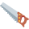

اسم الآلة وأوزانه
الدرس 1 من 4 — الصرف والتحويل
أُلاحظ
أقرأ الأمثلة وأستمع إليها، وألاحظ الكلمات الملوّنة.
- مِنْشَارٌ
- مِلْعَقَةٌ
- مِقَصٌّ
أستنتج
اسم الآلةيُصاغ من الثلاثي المتعدّي غالباً على أوزان: مِفْعَل (مِبْرَدٌ)، مِفْعَال (مِفْتَاحٌ)، مِفْعَلَة (مِكْنَسَةٌ).
| الوزن | أمثلة |
|---|---|
| مِفْعَل | مِبْرَدٌ، مِقَصٌّ، مِشْرَطٌ |
| مِفْعَال | مِفْتَاحٌ، مِنْشَارٌ، مِيزَانٌ |
| مِفْعَلَة | مِكْنَسَةٌ، مِلْعَقَةٌ، مِطْرَقَةٌ |

مِفْعَال
مِنْشَارٌ
مِفْعَلَة
مِلْعَقَةٌ
مِفْعَل
مِقَصٌّ
أُطبّق
1وزن «مِفْتَاحٌ»:
2وزن «مِكْنَسَةٌ»:
3اسم الآلة من «نَشَرَ»:
4استمع: ما وزن الكلمة؟
إجابات صحيحة من أول محاولة:
أتمرّن أكثر
أستمع، ثمّ أكتب ما أسمع:
أستمع، ثمّ أكتب ما أسمع:
✓ أنهيتَ هذا الدرس
الرسوم: Twemoji (CC-BY 4.0) وFluent Emoji من Microsoft (MIT). الأصوات: صوت عربي اصطناعي.